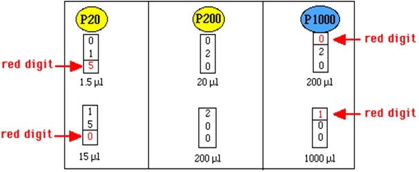

Micropipettor¶
How to Use a Micropipettor
adaptated from http://www.bio.davidson.edu/Courses/Bio111/Bio111LabMan/Preface%20D.html and https://www.wou.edu/las/physci/ch462/How%20to%20Use%20a%20Micropipettor.pdf
The micropipettor is used to transfer small amounts (< 1 ml) of liquids. The scales on micropipettors are in microliters (1000µl = 1 ml). They are very expensive pieces of equipment in the lab and you must know how to use them properly to not damaged them. They come different sizes which are capable of pipetting different ranges of volumes: P20 = 0.5- 20 µl, P200 = 20-200 µl, and P1000 = 200-1000 µl. They are used in conjunction with disposable (often sterile) plastic tips; the smaller micropipettors (P20 and P200) require the yellow tips and the P1000 pipettor uses the larger blue tips.
The following is an illustration of a micropipettor:
Directions¶
Note
Never point a pipettor up. This may cause liquid to run down into the pipettor destroying it.
When withdrawing liquids with the pipettor, always release the plunger slowly. This prevents liquid from rushing into the end of the pipette and clogging it up. This is especially important with large volume pipettors (200-1000 µl).
Be sure you use the proper size tip for each pipettor.
Always use a new tip for each different liquid.
Use the correct pipettor for the volume that is to be dispensed. Never use the 200-1000 µl pipette to dispense volumes below 200 µl. going below or above the range of the micropipettor may damage the instrument.
Never exceed the upper or lower limits of these pipettors. They are very expensive and delicate instruments which we cannot afford to damage. The limits are:
P20: 0.5 to 20.0 µl
P200: 20 to 200 µl
P1000: 200 to 1000 µl
Set the desired volume by turning the centrally located rings clockwise to increase volume or counterclockwise to decrease volume. Some examples are provided below:
Place a tip on the discharge end of the pipettor. NOTE: If sterile conditions are necessary do not allow the pipet tip to touch any object (including your hands).
The plunger will stop at two different positions when it is depressed. The first of these stopping points is the point of initial resistance and is the level of depression that will result in the desired volume of solution being transferred. Because this first stopping point is dependent on the volume that is being transferred, the distance you have to push the plunger to reach the point of initial resistance will change depending on the volume being pipetted. The second stopping point can be found when the plunger is depressed beyond the initial resistance until it is in contact with the body of the pipettor. At this point the plunger cannot be further depressed. This second stopping point is used for the complete discharging of solutions from the plastic tip. You should not reach this second stop when drawing liquid into the pipettor, only when expelling the last drop. Before continuing, practice depressing the plunger to each of these stopping points until you can easily distinguish between these points.
Depress the plunger until you feel the initial resistance and insert tip into the solution, just barely below the surface of the liquid and not as deep as possible.
Carefully and slowly release plunger. NOTE: If the solution you are pipetting is viscous, allow the pipet tip to fill to final volume before removing it from solution to avoid the presence of bubbles in the plastic tip which will result in an inaccurate volume.
Discharge the solution into the appropriate container by depressing plunger. This time, depress the plunger to the point of initial resistance, wait one second, and then continue pressing the plunger as far as it will go in order to discharge the entire volume of solution.
Remove tip by pressing down on the tip discarder.
Warning
REMEMBER TO CHANGE TIPS BETWEEN SOLUTIONS TO AVOID MIXING OR CONTAMINATING THE SOLUTIONS USED!!